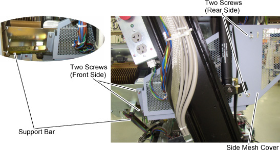
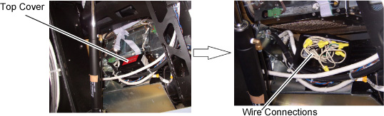
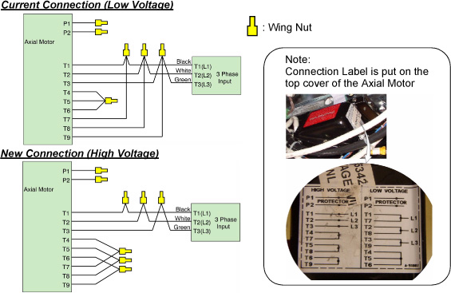
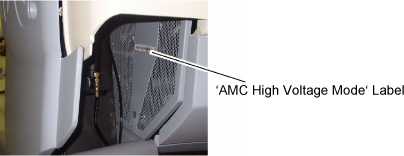

Operating Documentation
Direction 5167277-800, Rev# 8
5167277-800 - FX/Xtream SW & Upgrade Procedures
Operating Documentation |
| Last Revised: | 10 February 2006 |
This procedure should be performed ONLY for sites that meet the following:
For sites that meet these conditions, this procedure may be performed during the INITIAL LFC process. | |
Remove Gantry right side cover.
Turn OFF the gantry service switches (Axial Drive and 120VAC) and perform Lockout/Tagout procedures.
Remove the support bar from the front cover.
Remove the side mesh cover as follows:
Remove two (2) screws holding the front side of the side mesh cover to the tilting frame.
Turn ON the 120VAC gantry service switch, and tilt the gantry to FWD 30 degrees position, then turn OFF the 120VAC service switch.
Remove two (2) screws holding the rear side of the side mesh cover to the tilting frame, then remove the side mesh cover.

Remove the top cover from the motor.

Change the wire connections from ‘Low Voltage‘ (current connection) to ‘High Voltage‘ (new connection).
Refer to the following illustrations:

Reinstall the top cover of the motor, the side mesh cover, and the support bar.
Attach the AMC HV Mode label (5146059) on the side mesh cover, as shown in the illustration below.
Illustration 1: Location of AMC HV Mode Label
